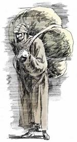

Azazel, or Azazael, or Azâzêl (Hebrew), Azazil (Arabic), is a term used three times in the Hebrew Bible , which has been traditionally understood either as a scapegoat, or in some traditions of Judaism, Christianity, and Islam, as the name of a fallen angel or demon.
The term in the Bible is limited to three uses in Leviticus 16, where two he-goats were offered to God and one of two he-goats got a lot, reading la-aza'zeyl ; either "for absolute removal" or "for Azazel" and outcast in the desert as part of the Day of Atonement , for God is seen as speaking through lottery. Leviticus 16:8-10 reads:
And Aaron shall place lots upon the two he goats: one lot "For the Lord," and the other lot, "For Azazel." And Aaron shall bring the he goat upon which the lot, "For the Lord," came up, and designate it as a sin offering. And the he goat upon which the lot "For Azazel" came up, shall be placed while still alive, before the Lord, to [initiate] atonement upon it, and to send it away to Azazel, into the desert.
Later rabbis, interpreting "la-azazel" as "azaz" (rugged), and "el" (strong), refer it to the rugged and rough mountain cliff from which the goat was cast down....
In the Dead Sea Scrolls the name Azazel occurs in the line 6 of 4Q203, the Book of the Giants . This is a part of the Enochic literature about fallen angels found at Qumran .
According to the Book of Enoch, which brings Azazel into connection with the Biblical story of the fall of the angels, located on Mount Hermon , a gathering-place of demons from of old (Enoch xiii.; compare Brandt, "Mandäische Theologie," 1889, p. 38). Azazel is represented in the Book of Enoch as one of the leaders of the rebellious Watchers in the time preceding the flood; he taught men the art of warfare, of making swords, knives, shields, and coats of mail, and women the art of deception by ornamenting the body, dying the hair, and painting the face and the eyebrows, and also revealed to the people the secrets of witchcraft and corrupted their manners, leading them into wickedness and impurity; until at last he was, at the Lord's command, bound hand and foot by the archangel Raphael and chained to the rough and jagged rocks of [Ha] Duduael (= Beth adudo), where he is to abide in utter darkness until the great Day of Judgment, when he will be cast into the fire to be consumed forever (Enoch viii. 1, ix. 6, x. 4-6, liv. 5, lxxxviii. 1; see Geiger, "Jüd. Zeit." 1864, pp. 196-204).
The translators of the Greek Septuagint understood the Hebrew term as meaning the sent away , and read:
Lev 16:8 "and Aaron shall cast lots upon the two goats, one lot for the Lord and the other lot for the scapegoat (Greek apompaios). 9 And Aaron shall present the goat on which the lot fell for the Lord, and offer it as a sin offering; 10 but the goat on which the lot of the sent away one fell shall be presented alive before the Lord to make atonement over it, that it may be sent away (Greek eis ten apompen acc.) into the wilderness."
Following the Septuagint, the Latin Vulgate, [Martin Luther and the King James Bible also give readings such as Young's Literal Translation :
"And Aaron hath given lots over the two goats, one lot for Jehovah, and one lot for a goat of departure"
This is rendered Za-za-e'il (the strong one against/of God), according to the Syriac Peshitta Version, as in Qumran fragment 4Q180.
1 Enoch portrays Azazel as responsible for teaching people to make weapons and cosmetics , 1 Enoch 8:1-3a reads:
And Azazel taught men to make swords and knives and shields and breastplates; and made known to them the metals [of the earth] and the art of working them; and bracelets and ornaments; and the use of antimony and the beautifying of the eyelids; and all kinds of costly stones and all coloring tinctures. And there arose much godlessness, and they committed fornication , and they were led astray and became corrupt in all their ways.
God sees the sin brought about by Azazel and has Raphael "bind Azazel hand and foot and cast him into the darkness: and make an opening in the desert —which is in Dudael — and cast him therein. And place upon him rough and jagged rocks, and cover him with darkness, and let him abide there forever, and cover his face that he may not see light."
Several scholars have previously discerned that some details of Azazel's punishment in the book of Enoch are reminiscent of the scapegoat ritual.
Thus, Lester Grabbe points to a number of parallels between the Azazel narrative in 1 Enoch and the wording of Leviticus 16, including "the similarity of the names Asael and Azazel; the punishment in the desert; the placing of sin on Asael/Azazel; the resultant healing of the land."
Daniel Stökl also observes that "the punishment of the demon resembles the treatment of the goat in aspects of geography, action, time and purpose. Thus, the place of Asael's punishment designated in 1 Enoch as Dudael is reminiscent of the rabbinic terminology used for the designation of the ravine of the scapegoat in later rabbinic interpretations of the Yom Kippur ritual. Stökl remarks that "the name of place of judgment (Dudael) is conspicuously similar in both traditions and can likely be traced to a common origin."
Azazel's fate is foretold near the end of 1 Enoch 2:8, where God says, "On the day of the great judgment he shall be cast into the fire..... The whole earth has been corrupted through the works that were taught by Azazel: to him ascribe all sin."
It should be remembered that Azazel and Shemhazai were said to be the leaders of the 200 fallen, and Uzza and Shemhazai were tutelary guardian angels of Egypt with both Shemhazai and Azazel and were responsible for teaching the secrets of heaven as well. The other angels dispersed to 'every corner of the Earth.'
Canon text also associates Azazel with the serpent and hell . In Chapter 23, verse 7, it is described as having seven heads, 14 faces, "hands and feet like a man's [and] on his back six wings on the right and six on the left."
Abraham says that the wicked will "putrefy in the belly of the crafty worm Azazel, and be burned by the fire of Azazel's tongue" (Abr. 31:5), and earlier says to Azazel himself, "May you be the firebrand of the furnace of the earth! Go, Azazel, into the untrodden parts of the earth. For your heritage is over those who are with you" (Abr. 14:5-6).
Here there is the idea that God's heritage (the created world) is largely under the dominion of evil — i.e., it is "shared with Azazel" (Abr. 20:5), again identifying him with Satan , who was called "the prince of this world" by Jesus. ( John 12:31 )
The Mishnah ( Yoma 39a ) follows the Hebrew Bible text; two goats were procured, similar in respect of appearance, height, cost, and time of selection. Having one of these on his right and the other on his left, the high priest, who was assisted in this rite by two subordinates, put both his hands into a wooden case, and took out two labels, one inscribed "for Yahweh " and the other "for absolute removal" (or "for Azazel"). The high priest then laid his hands with the labels upon the two goats and said, "A sin-offering to Yahweh " (thus speaking the Tetragrammaton ); and the two men accompanying him replied, "Blessed be the name of His glorious kingdom for ever and ever." He then fastened a scarlet woolen thread to the head of the goat "for Azazel"; and laying his hands upon it again, recited the following confession of sin and prayer for forgiveness:
"O Lord, I have acted iniquitously, trespassed, sinned before Thee: I, my household, and the sons of Aaron Thy holy ones. O Lord, forgive the iniquities, transgressions, and sins that I, my household, and Aaron's children, Thy holy people, committed before Thee, as is written in the law of Moses, Thy servant, 'for on this day He will forgive you, to cleanse you from all your sins before the Lord; ye shall be clean.'"
This prayer was responded to by the congregation present. A man was selected, preferably a priest, to take the goat to the precipice in the wilderness; and he was accompanied part of the way by the most eminent men of Jerusalem. Ten booths had been constructed at intervals along the road leading from Jerusalem to the steep mountain. At each one of these the man leading the goat was formally offered food and drink, which he, however, refused. When he reached the tenth booth those who accompanied him proceeded no further, but watched the ceremony from a distance. When he came to the precipice he divided the scarlet thread into two parts, one of which he tied to the rock and the other to the goat's horns, and then pushed the goat down (Yoma vi. 1-8). The cliff was so high and rugged that before the goat had traversed half the distance to the plain below, its limbs were utterly shattered. Men were stationed at intervals along the way, and as soon as the goat was thrown down the precipice, they signaled to one another by means of kerchiefs or flags, until the information reached the high priest, whereat he proceeded with the other parts of the ritual.
The medieval scholar Nachmanides (1194—1270) identified the Hebrew text as also referring to a demon, and identified this "Azazel" with Samael. However, he did not see the sending of the goat as honoring Azazel as a deity, but as a symbolic expression of the idea that the people's sins and their evil consequences were to be sent back to the spirit of desolation and ruin, the source of all impurity. The very fact that the two goats were presented before God , before the one was sacrificed and the other sent into the wilderness, was proof that Azazel was not ranked alongside God, but regarded simply as the personification of wickedness in contrast with the righteous government of God.
Maimonides (1134—1204) says that as sins cannot be taken off one's head and transferred elsewhere, the ritual is symbolic, enabling the penitent to discard his sins: "These ceremonies are of a symbolic character and serve to impress man with a certain idea and to lead him to repent, as if to say, "We have freed ourselves of our previous deeds, cast them behind our backs and removed them from us as far as possible."[14]
The rite, resembling, on one hand, the sending off of the basket with the woman embodying wickedness to the land of Shinar in the vision of Zechariah ( 5:6-11 ), and, on the other, the letting loose of the living bird into the open field in the case of the leper healed from the plague ( Lev 14:7 ), was, indeed, viewed by the people of Jerusalem as a means of ridding themselves of the sins of the year. So would the crowd, called Babylonians or Alexandrians, pull the goat's hair to make it hasten forth, carrying the burden of sins away with it (Yoma vi. 4, 66b; "Epistle of Barnabas," vii.), and the arrival of the shattered animal at the bottom of the valley of the rock of Bet adudo, twelve miles away from the city, was signalized by the waving of shawls to the people of Jerusalem, who celebrated the event with boisterous hilarity and amid dancing on the hills (Yoma vi. 6, 8; Ta'an. iv. 8). Evidently the figure of Azazel was an object of general fear and awe rather than, as has been conjectured, a foreign product or the invention of a late lawgiver. More as a demon of the desert, it seems to have been closely interwoven with the mountainous region of Jerusalem. Credit for the preceding: Wikipedia on Scapegoat.
Adventists teach that the scapegoat, or Azazel , is a symbol for Satan . The scapegoat translation of Lev.16 has been interpreted to be a prefigure of the final judgment by which sin is removed forever from the universe. Through the sacrifice of Jesus, the sins of the believers are forgiven them, but the fact that sins which were committed still exist on record in the "Books" of heaven (see Revelation 20:12 ). After the final judgment, the responsibility for all those forgiven sins are accredited to the originator of sin, Satan. After which, Satan is destroyed in the Lake of Fire. Sin no longer will exist anywhere.
They believe that Satan will finally have to bear the responsibility for the sins of the believers of all ages, and that this was foreshadowed on the Day of Atonement when the high priest confessed the sins of Israel over the head of the scapegoat. (Leviticus 16:21 )
Some critics have accused Adventists of giving Satan the status of sin-bearer alongside Jesus Christ. Adventists have responded by insisting that Satan is not a savior, nor does he provide salvific atonement for sin; Christ alone is the substitutionary sacrifice for sin, but holds no responsibility for it. In the final judgment, responsibility for sin is passed back to Satan who first caused mankind to sin. As the responsible party, Satan receives the wages for his sin—namely, death. Jesus alone as the "sin offering" bore the wages of death for the sinful world. While the guilt of sin is ultimately disposed of on Satan who carried the responsibility of "leading the whole world astray." Thus, the unsaved are held responsible for their own sin, while the saved, depend on Christ's righteousness.
The SDA Sabbath School quarterly, 2013 states:
"The ritual with the live goat was not an offering. After the lot decided which of the two goats was to be for Yahweh and which one was for Azazel (often translated as "scapegoat"), only the goat for Yahweh is referred to as a purification offering (see vss. 9, 15). By contrast the goat for Azazel is called the "live goat." It was never slain, probably to avoid any idea that the ritual constituted a sacrifice. The live goat came into play only after the high priest had finished the atonement of the entire sanctuary (vs. 20). This point cannot be overemphasized: the ensuing ritual with the live goat had nothing to do with the actual cleansing of the sanctuary or of the people. They already had been cleansed.
Who or what is Azazel? Early Jewish interpreters identified Azazel as the original angelic sinner and the primary author of evil, even as the leader of evil angels. We know him, of course, as a symbol of Lucifer himself.
The ritual with the live goat was a rite of elimination that accomplished the final disposal of sin. Sin would be brought upon the one responsible for it in the first place and then carried away from the people forever. "Atonement" was made upon it in a punitive sense (Lev. 16:10), as the goat carried the ultimate responsibility for sin.
Does Satan then play a role in our salvation, as some falsely charge we teach? Of course not. Satan never, in any way, bears sin for us as a (salvific) substitute. Jesus alone has done that, and it is blasphemy to think that Satan had any part in our redemption.
The ritual with the live goat finds a parallel in the law of the malicious witness (Deut. 19:16-21). The accuser and the accused stand before the Lord, represented by the priests and the judges. An investigation is held; and, if found to be a malicious witness, he shall receive the punishment he intended for the innocent (for example, vicious Haman who put up gallows for loyal Mordecai)."
Present Truth Magazine Editor's Note: Some are being too harsh in labeling the statement on the scapegoat transaction in the Adventist book, Questions on Doctrine, as "apostasy". While it is true that the statement is not as concise as it could have been, the point that is being stressed in the statement is that Satan is in no way our sin bearer in a salvific and substitutionary sense. This is what the authors were trying to emphasize. I'm sure that all will agree that only Christ could have borne the guilt of our sin and died in our place for our redemption. Only our Lord Jesus Christ was the "sin offering". The Azazel goat was not the "sin offering", only the Lord's goat was the sin offering.
The word kaphar that is translated as atonement in Lev 16 is one that shows that legal guilt is transferred from the sinner and borne into the sanctuary by way of the substitutionary "sin offering". The spotless goat sin offering is slain in the place of the sinner. So the "Lord's Goat" represents the sinless life and atoning death of our Lord and Savior Jesus Christ who has borne the legal guilt of sin for all the world. It is this legal guilt that is finally rolled back upon and transferred upon the head of the "Azazel Goat" to bear into the wilderness.
It is in this sense that the Azazel Goat makes "atonement" i.e., bears the legal guilt. This final disposition of guilt is in no way salvific and this is what QOD is attempting to emphasize. It is with this in mind that the word atonement that is used in reference to Satan could also be applied to the final destruction of the unsaved multitudes. They make "atonement" for their sin by their bearing the guilt and punishment for their sins themselves.
The sin of Satan is never transferred into the sanctuary. This is true for the sins of the unsaved as well. That is why the offering of the "Lord's Goat" is salvific for the repentant sinner who puts his faith in the "sin offering" and is thus justified from all guilt which is borne by Christ Himself as our redeemer and substitute.
However, the "Azazel Goat" is never a redeemer, substitute, or "sin offering" in any way. But the "guilt" and suffering that our Lord bore for us can legally and justly be finally placed upon the head of Satan and he will have to be punished with suffering and death for the guilt of the redeemed as well as his own guilt in causing so much suffering and pain to the world. The guilt and punishment that our Lord has redemptively and salvifically borne substitutionally for the redeemed community will ultimately and finally be rolled back punitively upon the head of the originator of sin, Satan.
So what I have said can be summarized by saying that the word "atonement" does not always have a salvific and "sin offering" meaning. It just means that "justice" is being done. The Law is being upheld legally. In the case of the redeemed it is a salvific term leading to forgiveness and eternal life. Christ as the "sin offering" has borne the punitive guilt of the Law for the redeemed and made "atonement" for them. The redeemed are declared "at one" with the demands of the Law. In the case of the lost, atonement is only in a punitive sense leading to suffering and eternal death, because they have no substitutionary sin offering to bear their guilt for them. These are just my thoughts on the issue under discussion and I am open to other thoughts on this.
Bill Diehl Jr.
www.PresentTruthMag.org